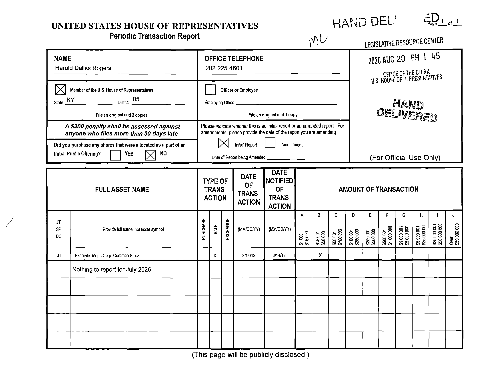
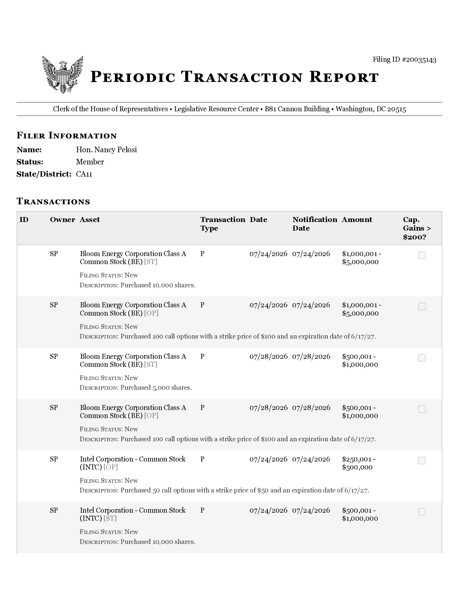
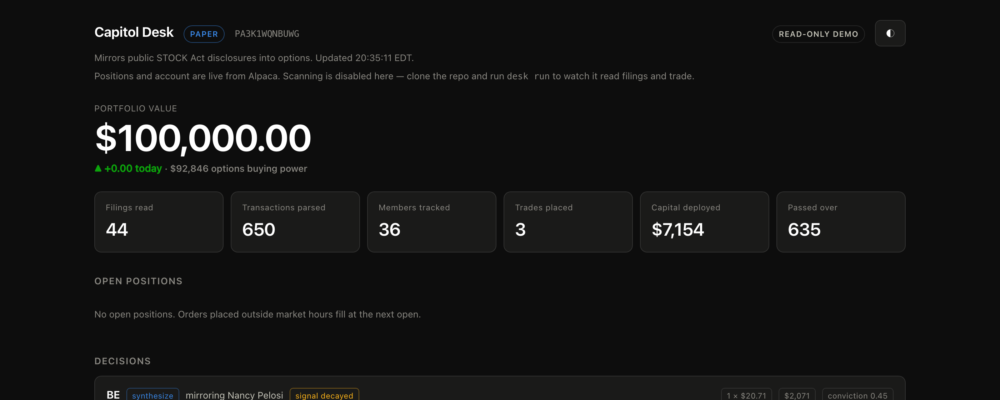

Alpaca AI Trading Agents Hackathon · 2026
Capitol Desk
An autonomous options desk that reads congressional financial disclosures,
decides whether the signal is still alive, and trades it — end to end, unattended.
The premise
Congress trades. The law says they must tell us.
The STOCK Act requires every member of Congress to publicly disclose any transaction
over $1,000 — within 45 days. Those filings are free, public, and almost unreadable.
368
Periodic Transaction Reports filed in 2026
31.5 days
Median lag from trade to disclosure
12%
Filed as scanned paper — zero machine-readable text
Public filings. Trading on them is not insider trading — it is the opposite:
acting on information the law requires be published.
02
Why nobody does this well
The data actively fights you
- Asset names wrap across lines, the owner column is often blank, and headers extract as mangled spacing.
- 12% are scanned paper. One 18-page filing holds 274 transactions and extracts zero characters.
- Paper filings print no tickers at all — the form says "Provide full name not ticker symbol."
- Blank forms contain a pre-printed example row. A naive OCR-and-regex pipeline buys "Example Mega Corp."
Our answer: Claude reads the text layer where one exists,
and reads the page visually where one doesn't. On that 274-row scan it
extracted every transaction — and correctly ignored the example row.

03
Architecture
Six stages, and the model only touches two
Ingest
House Clerk bulk archive → XML index → PTR PDFs, cached and incremental.
codeExtract
Text layer where it exists; the page read visually where it doesn't.
ClaudeResolve
Name → ticker, then verified against Alpaca before it can trade.
Claude + codeDecide
Live chains, greeks and signal decay → one contract and a conviction.
ClaudeSize & gate
Conviction → contracts, bounded by hard caps. Pure arithmetic.
codeExecute
Marketable limit orders and spreads via Alpaca; state reconciled back.
code
Claude decides what to trade.
Code decides how much.
Position sizing and risk limits are plain arithmetic in
a config file and a gate function. There is no prompt a model can write that gets it a bigger position.
04
Worked example · Filing 20035143
A real filing, a real order

What the filing says
Pelosi, filed 21 Aug. Bloom Energy calls, $100 strike,
expiring 17 Jun 2027 — a deep in-the-money LEAP used as stock replacement.
What the desk found
BE had already run +13.9% since her trade date. The outright June-2027
contract now costs $8,116 against a $5,000 per-trade cap — and every affordable
strike was 100% time value at 88% implied vol: volatility risk the filer never took.
What it did
Built a vertical debit spread — long the 175 call
(delta 0.75), short the 230. Same expiry, same thesis,
$2,071 of risk instead of $8,116. Conviction cut to 0.45 because the move had partly happened.
05
The part that matters
It declines far more than it takes
Declined on the merits — verbatim
PG — "a $1k–$15k purchase inside a 401(k) subholding of a family trust: a routine
retirement-account allocation into a mega-cap consumer staple, not an informed, concentrated bet … there's no thesis to express."
AMAT — "the quote set is internally incoherent: every listed call is priced above the
maximum theoretical value of a call … there is no way to size or price an honest replication."
(It had caught a bug in our own price feed.)
Anyone can build a bot that copies Pelosi. The engineering is in the 635 it refused.
06
We measured it
Copying Congress indiscriminately does not work
Event study over 143 filings and 826 disclosed purchases. Entry is the
filing date, not the transaction date — a trade is private for up to 45 days, so
entering earlier is lookahead bias. Returns are excess over SPY across the identical window.
| Horizon | Events | Mean excess | Median excess | Hit rate |
|---|
| 5 trading days | 799 | +0.09% | −0.40% | 45.2% |
| 21 trading days | 669 | +0.74% | −0.37% | 49.0% |
| 63 trading days | 668 | +0.42% | +0.08% | 50.1% |
Hit rates are a coin flip and the median trade is flat to
negative. The positive means come from a handful of large winners, not a broad edge.
That is the argument for the desk, not against it — if the average disclosed purchase
is noise, the value has to come from selection.
07
Controls
Every limit is code, not a prompt
- $5,000 maximum per trade · $25,000 per day
- Never >5% of a contract's open interest; minimum OI 50
- Spreads >20% wide are skipped — a thesis you can't exit is worth nothing
- Marketable limit orders only. Never a market order on an option
- Paper-only guard: the desk refuses to start against a live endpoint
Caught in development
Order reconciliation began writing real broker statuses while every limit query still filtered
on 'placed'. The daily cap and position limit silently stopped binding.
Found, fixed, and pinned with parametrised regression tests asserting
that live statuses consume the caps and dead ones release them.
36 tests cover the deterministic machinery — sizing under caps,
spread validation, the paper-only guard.
The model can argue for a trade. It cannot argue for a bigger one.
08
Running now
Live, autonomous, and auditable
Positions and P&L stream from a real Alpaca paper account.
desk loop runs unattended — scanning for filings, holding them when the market is
closed rather than pricing into a session it hasn't seen, and handing the book to a review agent over
Alpaca's MCP server.

09
Capitol Desk
The interesting agent isn't
the one that trades.
It's the one that declines.
Live demo
capitol-desk.onrender.com
Source
github.com/faarisaahmed/
team-shaw-hackathon
Built with
Claude Opus 5 · Claude Agent SDK
Alpaca MCP Server · Alpaca API